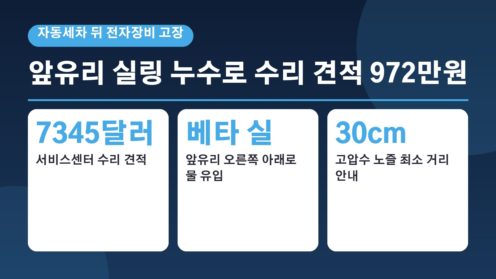
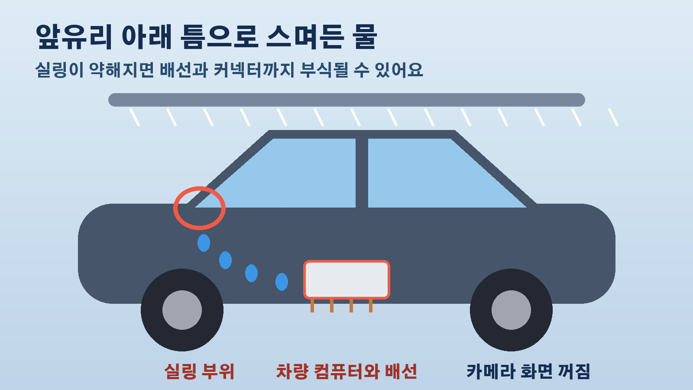

자동세차 뒤 카메라가 모두 꺼진 테슬라 모델 Y, 앞유리 실링 누수로 수리 견적 972만원 나온 사연

자동세차기에 차를 넣을 때 혹시 물이 안으로 새지는 않을까 한 번쯤 걱정해 보셨을 거예요. 그런데 미국에서 실제로 자동세차 직후 차 안 전자장비가 고장 나 7345달러, 우리 돈 약 972만원의 수리 견적을 받은 테슬라 모델 Y 차주 사연이 알려졌습니다. 더드라이브가 10월 21일 보도한 내용인데요. 무슨 일이 있었는지, 세차장 이용자와 중고 전기차를 보는 분들이 어떤 점을 챙겨 보면 좋을지 차례로 정리해 볼게요.
자동세차 직후 무슨 일이 있었나
문제가 된 차는 2022년형 테슬라 모델 Y 퍼포먼스입니다. 차주는 자동차 판매점에서 주행거리 5만 마일, 약 8만km가 안 되는 중고차로 이 차를 샀고, 산 지 약 4개월 만에 일이 터졌습니다. 자동세차를 마친 직후 차에 달린 모든 카메라 화면이 까맣게 변했고, 적응형 헤드램프 경고등이 켜졌으며, 통신 연결도 잠시 끊겼다고 합니다. 평범하게 세차 한 번 했을 뿐인데 차의 눈 역할을 하는 장비들이 한꺼번에 멈춘 셈입니다.
원인으로 지목된 앞유리 베타 실
테슬라 서비스센터가 누수 검사를 해 보니 앞유리 오른쪽 아래 실링 부위로 물이 들어오고 있었습니다. 차주가 들은 진단은 앞유리를 붙이고 틈을 막아 주는 베타 실이라는 부분에 문제가 생겨 물이 차량 컴퓨터까지 흘러 들어갔고, 그 과정에서 연결 배선과 커넥터가 부식됐다는 것이었어요. 서비스센터가 내놓은 수리 견적은 7345달러였습니다. 작은 유리 틈 하나가 전자장비 손상으로 번지면서 수리 범위가 커진 것이죠.
보험 거절과 엇갈린 책임 공방
차주는 보험사에 보상을 요청했지만 보험사는 이번 고장이 보상 대상인 우발적 사고에 해당하지 않는다며 거절했다고 합니다. 온라인 커뮤니티 레딧에서는 누구 책임인지를 두고 의견이 갈렸어요. 앞유리를 교체하면서 시공이 잘못됐을 수 있다는 의견이 나오자 차주는 서비스센터에서 순정 앞유리라는 확인을 받았다고 답했습니다. 판매점의 사전 점검을 문제 삼는 사람도 있었고 보험사 판단이 맞는지 묻는 사람도 있었습니다. 차주는 공식적으로 문제를 제기하고 테슬라에 수리비 재검토를 요청할 계획이고, 아직 제조 결함이나 판매점 책임이 확인된 것은 아닙니다.

테슬라가 안내하는 세차 방법과 세차 모드의 한계
이번 일로 테슬라의 공식 세차 지침도 다시 눈길을 끌었습니다. 모델 Y에는 세차 모드가 있는데, 이 기능을 켜면 창문과 충전구를 닫고 와이퍼와 감시 모드처럼 세차 중 말썽을 일으킬 수 있는 기능을 꺼 줍니다. 테슬라는 자동세차를 할 때 브러시가 차체에 닿지 않는 비접촉식 세차장을 쓰라고 권하고, 고압세척기를 쓸 때는 노즐을 차체에서 최소 30cm 떨어뜨리고 창문이나 도어 실링 부위에 물줄기를 집중하지 말라고 안내합니다. 다만 세차 모드는 전자장비와 충전구 등을 관리하는 기능이어서 이미 손상된 실링으로 물이 들어오는 것까지 막아 주지는 못한다는 점은 알아 두셔야 합니다.
중고 전기차 살 때 함께 볼 부분
기사는 이번 사례가 중고 전기차를 살 때 배터리 상태만이 아니라 차체 누수 흔적과 전자장비가 정상으로 작동하는지도 확인해야 한다는 점을 보여 준다고 짚었습니다. 특히 앞유리 주변 실링과 배선 연결 부위는 겉모습만 봐서는 상태를 알기 어렵습니다. 중고 테슬라를 알아보고 계신다면 차를 받기 전에 누수 흔적과 카메라 같은 전자장비 작동을 꼼꼼히 살펴보시고, 세차할 때는 세차 모드와 비접촉식 세차, 고압수 거리 지침을 함께 지켜 주시는 것이 좋겠습니다.
참고한 기사: 더드라이브 세차 한 번 했을 뿐인데 테슬라 모델 Y 수리비 972만원 날벼락 2026년 10월 21일
태그
테슬라모델Y 자동세차 세차누수 앞유리실링 베타실 테슬라세차모드 비접촉식세차 중고전기차 전기차세차 차량수리비